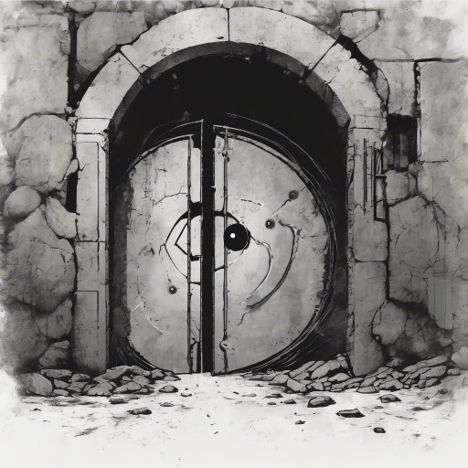

A bunker romos bejáratához érsz. A vaskapu félig nyitva, belül sötétség. A falon egy szimbólum: egy szem, körülötte három kör. Ugyanaz, mint a nyakláncodon – amit még gyerekkorodban találtál rád.

Ha belépsz a bunkerbe.
Ha inkább körbejársz, hátha van másik bejárat.